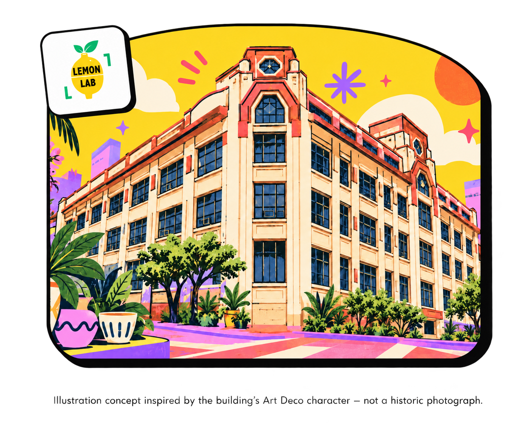
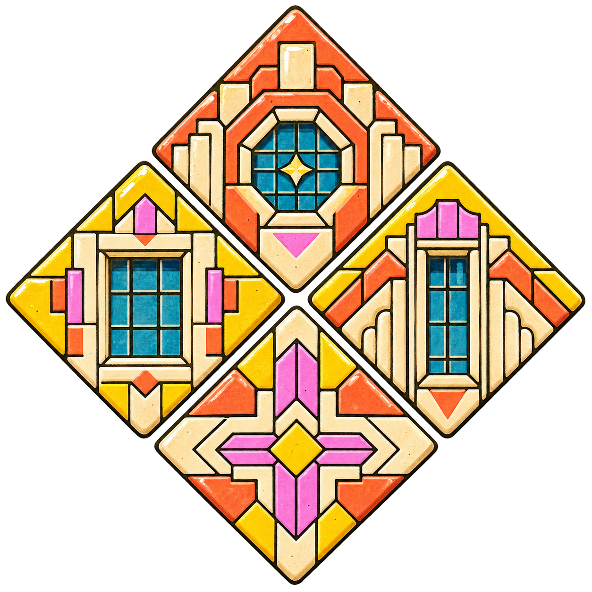
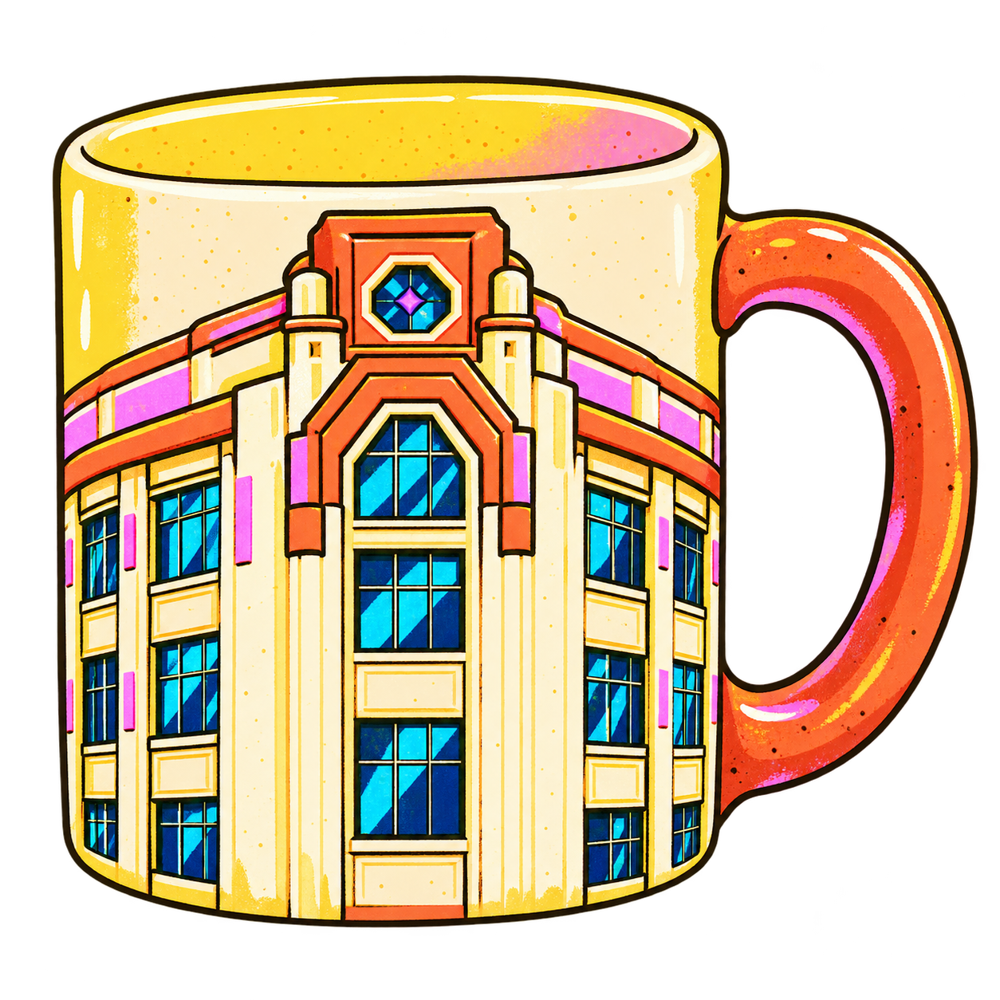
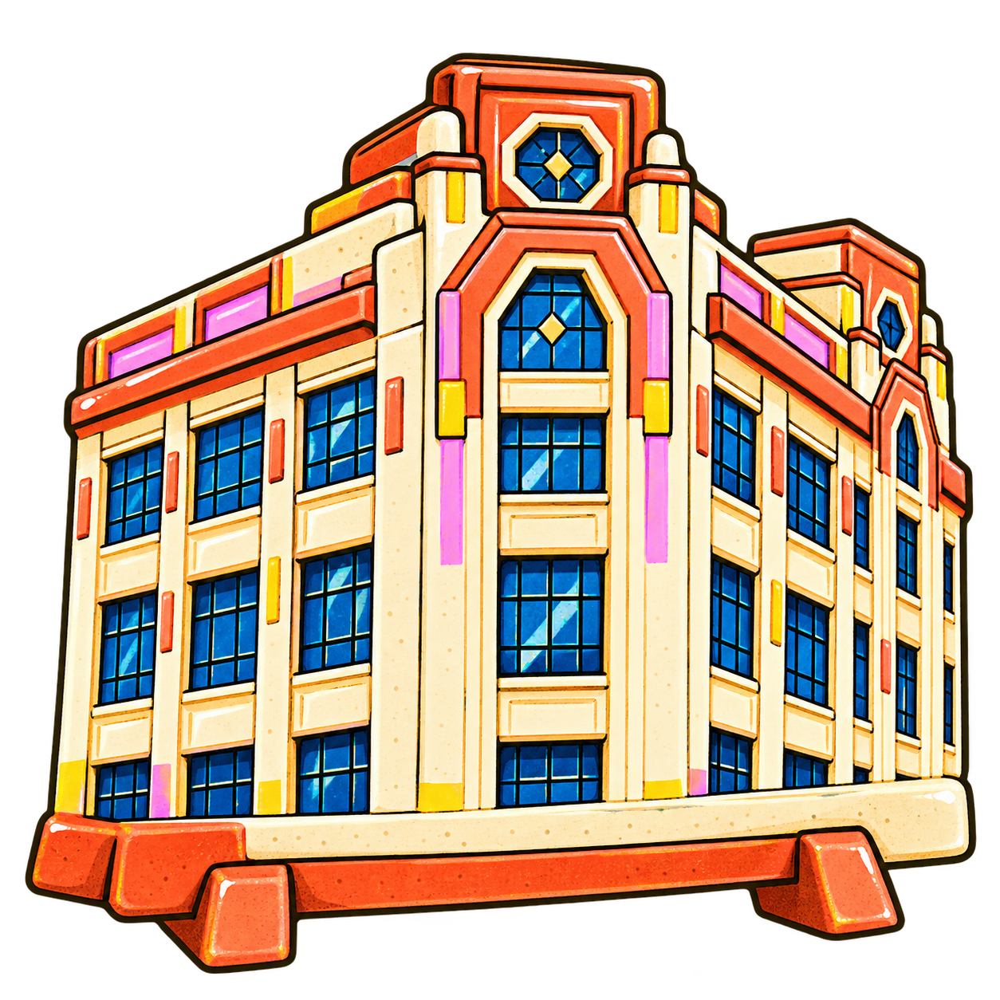
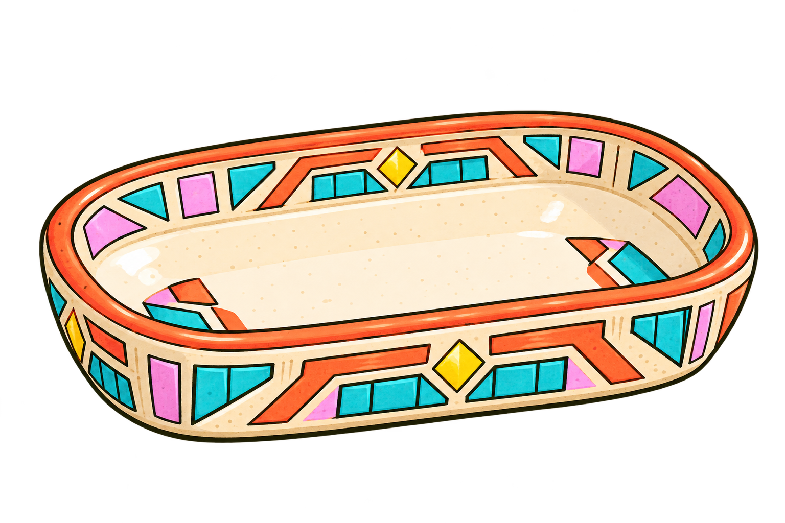
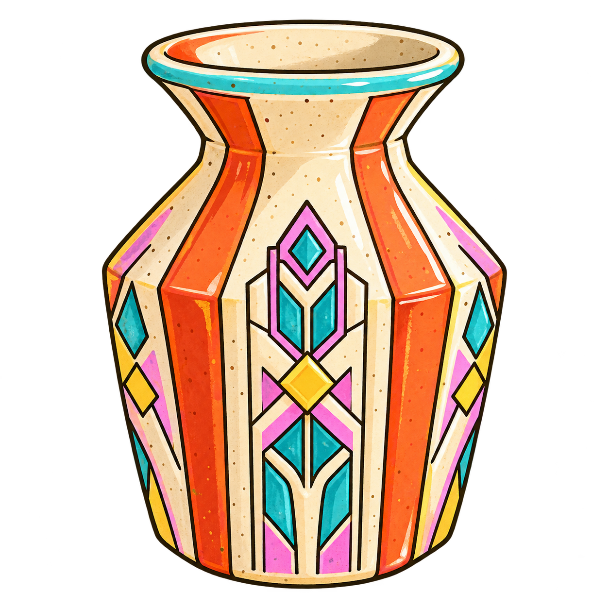

Notice the place
Look closely at the building’s geometric details, rhythm, and character.
🍋 Escolta, Manila · Heritage side quest
Make things. Find the story. Explore the historic First United Building, admire its distinctive architectural details, and discover how heritage can inspire a new clay creation.
From Heritage to Handcraft
Shape the Clay. Discover the Story.

About the studio
Lemon Lab Pottery Studio is a welcoming community space where curious beginners, makers, friends, and teams can explore clay through wheel throwing, handbuilding, and pottery painting.
Tucked inside Room 409 of the First United Building, the studio brings a contemporary, hands-on creative experience into one of Escolta’s enduring heritage spaces. Every piece begins with a lump of clay—and an invitation to notice the place where it is made.
The place behind the pottery
also known as the Perez–Samanillo Building
Located on Escolta Street in Manila, the building dates to 1928 and is notable for its Art Deco architectural style, distinguished by geometric forms and decorative patterns. Escolta has long held an important place in Manila’s commercial history; today, the building accommodates creative enterprises, artists, and cultural activities.
“From Heritage to Handcraft” connects Lemon Lab Pottery’s creative activities with the history of the First United (Perez–Samanillo) Building. Its distinctive architectural design and commercial heritage help visitors appreciate the place behind the pottery experience.View the NHCP registry entry
Look closely at the building’s geometric details, rhythm, and character.
Translate observation into form, texture, pattern, and a personal ceramic piece.
Leave with a deeper connection to Escolta and the meaning of making in place.
A short history · Escolta, Manila
The First United Building was originally known as the Perez–Samanillo Building. Its story connects pre-war Escolta, architectural ambition, wartime survival, and today’s creative community.
Built for Luis Perez Samanillo and designed by architect Andrés Luna de San Pedro. The Manila city government awarded it the “most beautiful office building” distinction that year, according to the NHCP marker.
Escolta was a major commercial and financial district. The building hosted businesses and, later, Berg’s Department Store on its ground floor.
The building survived the Battle of Manila, although the wider district suffered severe wartime damage. Its continued presence is part of Escolta’s heritage landscape.
The NHCP marker records its acquisition by First United Building Corporation in 1968. Today, the building supports a mix of businesses and creative activities.
A tiny heritage challenge
Question 1 of 5
Which architectural feature is the best match for a ceramic tile built around repeated rectangular lines?
Choose an answer, then continue through all five questions.
Make something memorable
Open each card to discover the experience. Availability, inclusions, and prices may change—confirm current details on Lemon Lab’s official website.
Looking for a fun side quest, a relaxing solo date, or a unique activity with your special someone? Bring your friends, family, or anyone who’s up for getting a little muddy!
In this 1-hour beginner-friendly pottery class, you will make 1 piece on the pottery wheel (cup, snack bowl, or matcha bowl) with guidance from our in-house potters. No experience required! Just come ready to have fun.
Love what you made? Simply add our Glazing & Firing service so you can bring your piece home!
If the Speed Run leaves you wanting more, the Essentials Class is where the real pottery journey begins. This 3-hour beginner-friendly class gives you plenty of time to learn the fundamentals of wheel throwing and build your confidence on the wheel.
You’ll create 2–3 ceramic pieces during the session and choose your favorite 2 pieces for us to professionally glaze and fire for FREE.
Want the complete pottery experience? Add our Paint Your Own Pottery option and return 3–4 weeks later to decorate your pieces before their final firing.
If you’re looking to explore a new hobby and maybe even a new skill, this is the class we recommend. No experience required!
Ever wanted to make a mug with a giant bow handle, a cat on a mug, tiny mushrooms, or just want to design your own mug? This is the class for you!
Our 3-hour Handbuilding Mug Class is perfect for beginners who want complete creative freedom—no pottery wheel needed. Using our easy-to-follow mug templates as your starting point, you’ll learn handbuilding techniques while customizing your mug with fun shapes, and decorations. We’ll help bring your ideas to life!
You can also add an option to paint your mug on the same day if you want to take your designs to the next level!
Don’t want to get your hands muddy and just want to chill, catch up, and paint a little? We’ve got you.
Pick your favorite piece from our collection of ready-to-paint pottery, grab a seat, and spend a relaxing few hours adding your own colors and designs. Whether it’s a cute date idea, a solo self-care session, or a creative hangout with friends and family, this experience is all about slowing down and having fun.
No pressure. No mess. Just good company, good vibes, and a one-of-a-kind keepsake to take home.
Practice pottery at your own pace in a space that feels like home.
Whether you’re looking for a quiet corner to focus, a creative community to grow with, or simply a place to make pottery whenever inspiration strikes, you’re always welcome here.
Our studio is open to all skill levels—from complete beginners finding their footing to experienced potters refining their craft. No pressure, no gatekeeping, and definitely no judgment.
Come make a mess, experiment, learn, and create alongside a community that loves clay just as much as you do.
Let’s be honest—another trust fall or PowerPoint party isn’t exactly memorable.
Get your team offline (for once!), work with your hands, and enjoy a creative experience that’s equal parts relaxing, collaborative, and genuinely fun. Whether you’re throwing on the pottery wheel, handbuilding, or painting pottery, our workshops are designed to get everyone talking, laughing, and creating together.
No artistic talent? No problem. Our sessions are beginner-friendly, and our in-house potters will guide your team every step of the way.
Perfect for team celebrations, company outings, onboarding, client appreciation events, or simply giving your team a well-deserved break from screens and meetings.
Less emails. Better team memories.
Looking for a venue that’s a little less ordinary?
Host a pottery-themed birthday, bridal shower, creative gathering, or host your own workshop in our cozy studio nestled inside a beautiful heritage building.
With wide sun-lit windows, plenty of creative energy, and a warm, welcoming atmosphere, it’s the kind of space you just can’t find anywhere else. We’ll help you create an experience that’s relaxed, memorable, and a little messy—in the best way possible.
Available at the pottery studio
Discover handmade ceramic products that carry the geometry, details, and craft traditions of Escolta into everyday objects.

Decorative ceramic tiles inspired by architectural geometry.

Handmade mugs featuring designs based on selected building details.

Small ceramic souvenirs representing Escolta's heritage.

Trinket dishes with decorative patterns inspired by the building.

Handmade ceramic pieces that interpret traditional craftsmanship.
Come make with us
Questions about classes, memberships, or a private pottery gathering? Reach the studio through its official channels.
Historical information is based on the National Historical Commission of the Philippines registry entry for the Perez–Samanillo Building and contextual material from Lemon Lab’s official website. Class summaries are informational and link to Lemon Lab for current details.